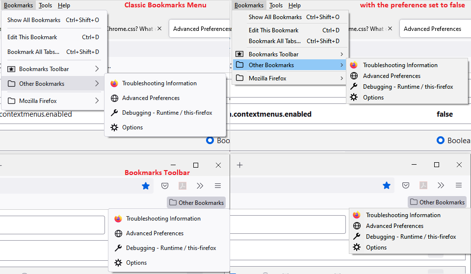

Before the "Photon" user interface design reached its fourth anniversary, Firefox 89 has brought us the "Proton" user interface. The design of the tab bar has been particularly controversial due to its greater height, and the way tabs float. The feeling of spaciousness also extends to the menus. Here are some ideas for modifying these changes if they bother you, and of course you can find additional suggestions on the usual sites (especially r/FirefoxCSS).
- Restoring Compact mode to the density selector
- Tightening up the menu spacing
- Re-styling tab buttons as connected tabs
Enabling "Compact" Toolbar Density
Do you miss having "compact" toolbars? The developers have reduced support for Compact mode so if you would like to select it from the Density popup on the Customize screen, you need to change a preference so it appears there:
- In a new tab, type or paste about:config in the address bar and press Enter/Return. Click the button accepting the risk.
- In the search box in the page, type or paste compact and pause while the list is filtered.
- Double-click the browser.compactmode.show preference to switch the value from false to true.
Alternately, if you don't plan to use the Density selector frequently, you can modify the density preference directly:
- In a new tab, type or paste about:config in the address bar and press Enter/Return. Click the button accepting the risk.
- In the search box in the page, type or paste browser.uidensity and pause while the list is filtered.
- Double-click the preference to display an editing field, change the value as desired, then press Enter or click the blue check mark button to save the change. These are the available values:
0 => Normal density (default)
1 => Compact density
2 => Touch density
This screenshot illustrates the difference in heights:

Reducing vertical spacing in menus
Most of the menus in Firefox 89 are shorter, but you still may prefer smaller gaps between the items, especially with long lists like Bookmarks. The main reason items are more widely spaced is the padding along the top and bottom of each item. There is a temporary preference in Firefox 89 to roll back the changes to some menus, and for more control or in future versions of Firefox, you can use custom style rules in a userChrome.css file.
Here are the steps to switch the temporary preference between the older menu appearance and the Firefox 89 ("Proton") appearance:
- In a new tab, type or paste about:config in the address bar and press Enter/Return. Click the button accepting the risk.
- In the search box in the page, type or paste browser.proton.contextmenus.enabled and pause while the list is filtered.
- Double-click the preference to switch the value between true (Proton style) and false (Photon style).
This reverts the menus to their previous spacing and color scheme:

To take direct control of the padding, you can use CSS code such as the following. If 4 pixels of padding is too high, you could try 3px; if it's too low, try 5px:
/*** Tighten up drop-down/context/popup menu spacing ***/
menupopup > menuitem, menupopup > menu {
padding-block: 4px !important;
}
:root {
--arrowpanel-menuitem-padding: 4px 8px !important;
}
This makes the spacing similar to Firefox 88:

Restyling tab buttons
One of the more controversial changes in Firefox 89 is the new appearance of tabs as floating buttons rather than connected tabs. At least for now, there is a preference to roll back the changed tab design but after all the bugs are squashed, that probably will be removed. Looking to the future, numerous users have posted solutions to "reconnect" the buttons, to modify their shape and size, and to create more distinct tabs for background/inactive tabs. So you have option.
Here are the steps to switch the temporary preference between the Firefox 57-88 ("Photon") appearance and the Firefox 89 ("Proton") appearance:
- In a new tab, type or paste about:config in the address bar and press Enter/Return. Click the button accepting the risk.
- In the search box in the page, type or paste browser.proton.enabled and pause while the list is filtered.
- Double-click the preference to switch the value between true (Proton style) and false (Photon style).
If you prefer, you can use the following controls to generate a rules file to restyle the Firefox 89 tab bar. The rules can be incorporated directly into a userChrome.css file, or you could include them by reference as described in Adding Style Recipes to userChrome.css. The buttons to grab the CSS you tweak using the following form controls follow after the form.
Tab Title
Tab Title
Tab Title
|
||
Upper corner rounding: |
Tabs floating or connected: |
Show inactive tab boundaries: |
CSS based on above options:
CSS to be shown here, assuming JavaScript is not disabled.